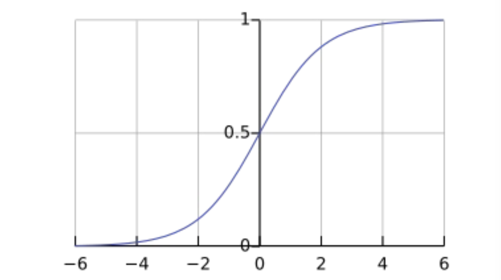
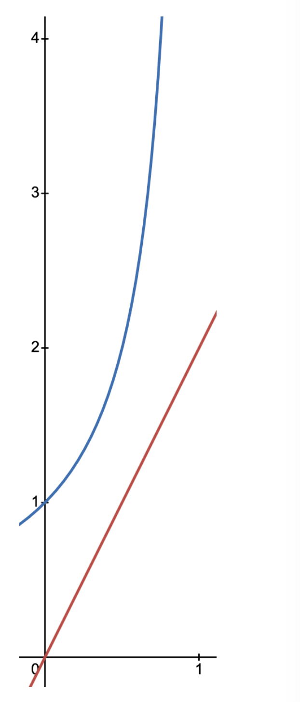

1. 암시적 피드백(Implicit Feedback)과 기존 방식의 한계
지금까지 우리는 사용자가 직접 영화에 부여한 1~5점의 평점, 즉 명시적 피드백(Explicit Feedback)을 기반으로 유틸리티 행렬 \(R\)을 구성했습니다. 하지만 현실의 많은 서비스에서는 사용자가 명시적인 점수를 매기기보다 클릭, 구매, 동영상 시청 여부 등으로 선호도를 간접적으로 드러냅니다. 이를 암시적 피드백(Implicit Feedback)이라고 합니다.
암시적 피드백 환경에서 유틸리티 행렬 \(R\)의 원소는 오직 0(시청하지 않음) 또는 1(시청함)의 이진(Binary) 값만 가집니다. 이러한 데이터에 기존의 연속형 수치 예측용인 RMSE 목적 함수를 그대로 사용하는 것은 다음 세 가지 치명적인 한계를 가집니다.
- 예측 범위의 이탈: 우리의 모델 \(u_x^\top v_i\)는 이론적으로 \([-\infty, \infty]\) 범위의 값을 출력할 수 있으므로, 타겟 값인 1을 초과하는 예측값(\(u_x^\top v_i > 1\))이 나올 수 있습니다.
- 비효율적인 기울기(Gradient): 잘못된 예측에 대해 파라미터를 효과적으로 업데이트하기 위한 최적화 관점의 기울기 곡선(Gradient curve)이 이상적이지 않습니다.
- ’0’의 의미 왜곡: RMSE 방식은 \(r_{xi} = 0\)인 데이터를 ’사용자가 이 아이템을 싫어한다(Dislike)’로 강력하게 가정합니다. 하지만 실제 암시적 피드백에서 0은 단지 ’아직 발견하지 못했거나 시청하지 않음(Not watched)’을 의미할 확률이 높습니다.
2. 해결책 1: 시그모이드(Sigmoid) 함수의 도입
- 첫 번째 한계를 극복하기 위해, 예측값의 출력을 확률의 범위인 \([0, 1]\)로 제한(Limit)하는 방법이 필요합니다. 이를 위해 선형 상호작용 \(u_x^\top v_i\)의 결과를 그대로 출력하는 대신, 시그모이드 함수(Sigmoid Function, \(\sigma\))를 통과시킵니다.
2.1. 시그모이드 함수의 수학적 정의
\[\sigma(x) = \frac{1}{1 + e^{-x}}\]
- 이 함수는 다음과 같은 중요한 수학적 특성을 가집니다:
- 모든 실수 범위 \((-\infty, \infty)\)의 입력값을 \((0, 1)\) 사이의 값으로 매핑(Mapping)합니다.
- 입력값이 0일 때 정확히 중심값인 \(0.5\)를 가집니다 (\(\sigma(0) = 0.5\)).
- 모든 구간에서 단조 증가(Monotonically increasing)합니다.

2.2. 시그모이드가 주는 모델 학습의 의미 (Implication)
시그모이드가 없다면, 모델의 업데이트 방향에 심각한 모순이 발생할 수 있습니다.
예를 들어, 실제 정답이 \(r_{xi} = 1\)인데 모델의 예측값이 이미 1을 초과한 \(1.5\)(\(u_x^\top v_i > 1\))라고 가정해 봅시다. 단순 오차를 줄이는 방식은 예측값을 \(1.5\)에서 \(1.0\)으로 감소(Decrease)시키도록 파라미터를 업데이트합니다. 정답을 맞혔음에도 불구하고 선호도를 낮추는 방향으로 학습되는 셈입니다.
반면, 시그모이드를 적용하면 신호의 일관성(Consistent signals)이 확보됩니다.
- \(r_{xi} = 1\)인 경우, 모델은 언제나 \(u_x^\top v_i\)를 증가(Increase)시키도록 학습됩니다.
- \(r_{xi} = 0\)인 경우, 모델은 언제나 \(u_x^\top v_i\)를 감소(Decrease)시키도록 학습됩니다.
3. 해결책 2: 이진 교차 엔트로피 (Binary Cross Entropy, BCE)
- RMSE는 주로 범위가 없는 연속적인 타겟(Continuous, unbounded targets)을 위한 오차 함수입니다. 이진 분류 문제로 바뀐 암시적 피드백 환경에서는 이진 교차 엔트로피(BCE)를 사용하는 것이 수학적으로 타당합니다.
3.1. BCE 손실 함수 공식
\[J_{BCE}(r_{xi}, u_x, v_i) = -\left[ r_{xi}\log \sigma(u_x^\top v_i) + (1-r_{xi})\log(1 - \sigma(u_x^\top v_i)) \right]\]
- 이 식은 두 가지 상황으로 완벽히 분리되어 작동합니다:
- \(r_{xi} = 1\)일 때: 두 번째 항은 사라지고 \(-\log \sigma(u_x^\top v_i)\)만 남습니다. 이를 최소화하려면 \(\sigma(u_x^\top v_i)\)가 \(1\)에 가까워져야 합니다.
- \(r_{xi} = 0\)일 때: 첫 번째 항이 사라지고 \(-\log(1 - \sigma(u_x^\top v_i))\)만 남습니다. 이를 최소화하려면 \(\sigma(u_x^\top v_i)\)가 \(0\)에 가까워져야 합니다.
3.2. 기울기 곡선 (Gradient Curves) 비교: 왜 BCE가 우수한가?
RMSE와 BCE의 결정적 차이는 오차를 뒤로 전파하는 기울기(Gradient)의 형태에 있습니다. 계산을 단순화하기 위해 정답 \(r_{xi} = 0\)이고, 예측 확률을 \(a = \sigma(u_x^\top v_i)\)라고 가정해 봅시다.
RMSE의 기울기: \(\nabla_a ||a||^2 = 2a\)
- 기울기가 \(a\)의 크기에 비례하여 선형적(Linearly)으로만 증가합니다.
BCE의 기울기: \(\nabla_a -\log(1-a) = 1/(1-a)\)
- 예측이 크게 틀릴수록(즉, \(a\)가 1에 가까워질수록) 분모가 0에 가까워지며 기울기가 기하급수적으로 폭발적(Rapidly)으로 증가합니다.

- 결과적으로 BCE 손실 함수는 이미 잘 맞추고 있는(Accurate) 샘플보다는, 강하게 확신하면서 틀린(Wrong) 샘플에 모델의 학습 역량을 집중하도록 만듭니다.
4. 해결책 3: 랭킹 손실(Ranking Losses)과 BPR
BCE를 도입하여 첫 번째와 두 번째 한계는 해결했지만, 세 번째 한계인 ‘0을 Dislike로 맹신하는 문제’는 여전히 남아있습니다. 이는 BCE와 RMSE 모두 개별 요소(Elementwise)에 대해 독립적인 0/1 예측을 강제하기 때문입니다.
이를 근본적으로 해결하기 위해 학계는 ‘랭킹(Ranking)’ 관점의 접근법을 고안했습니다. 절대적인 점수를 맞추는 것이 아니라, 아이템 간의 상대적인 순서만 올바르게 나열하자는 아이디어입니다.
4.1. 상대적 선호도 가정
- 특정 사용자 \(x\)가 영화 \(i\)는 시청했고(\(r_{xi} = 1\)), 영화 \(j\)는 시청하지 않았다면(\(r_{xj} = 0\)), 우리는 다음과 같은 합리적인 가정을 할 수 있습니다:
- ‘사용자 \(x\)는 \(j\)보다 \(i\)를 더 좋아한다 (\(i > j\)).’
- 만약 사용자가 정말로 \(j\)를 좋아했다면, \(i\)보다 먼저 시청했을 것이기 때문입니다. 따라서 모델의 목적은 개별 \(r_{xi}\)를 1로 만드는 것이 아니라, \(u_x^\top v_i\)가 \(u_x^\top v_j\)보다 크도록(\(u_{xi} > u_{xj}\)) 파라미터를 업데이트하는 것으로 바뀝니다.
4.2. 베이지안 개인화 랭킹 (Bayesian Personalized Ranking, BPR)
- 이러한 상대적 비교 아이디어를 우아하게 수식으로 풀어낸 것이 바로 추천 시스템의 명저로 꼽히는 BPR (Bayesian Personalized Ranking) 손실 함수입니다.
\[J_{BPR}(U, V) = \sum_{(x,i,j)} -\log \sigma\left( u_x^\top v_i - u_x^\top v_j \right)\]
- 작동 원리: 관측된 긍정 아이템 \(i\)와 관측되지 않은 부정 아이템 \(j\)의 예측 점수 차이(\(u_x^\top v_i - u_x^\top v_j\))를 구합니다. 이 차이가 클수록(양수일수록) 올바른 랭킹이며, 시그모이드를 거친 로그 값은 0에 가까워집니다 (손실 최소화).
- 공정성 보장: 쌍(Pair) 단위의 차이를 시그모이드 함수에 통과시킴으로써, 극단적인 이상치 차이값이 모델 전체 기울기를 지배하는 것을 방지하고 모든 쌍이 공정하게 학습에 기여(Contribute fairly)하도록 돕습니다.
- 네거티브 샘플링 (Negative Sampling): 이 최적화가 잘 동작하기 위해서는 방대한 ‘시청하지 않은 데이터(\(r_{xj}=0\))’ 집합에서 적절한 난이도의 부정 아이템 \(j\)를 어떻게 무작위 추출(Randomly selected)할 것인지가 모델 성능을 좌우하는 매우 중요한 요소(Important)가 됩니다.